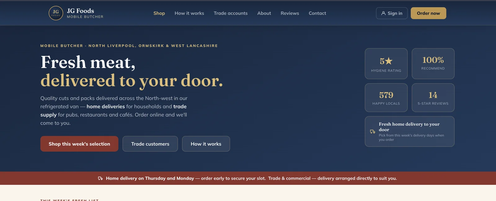
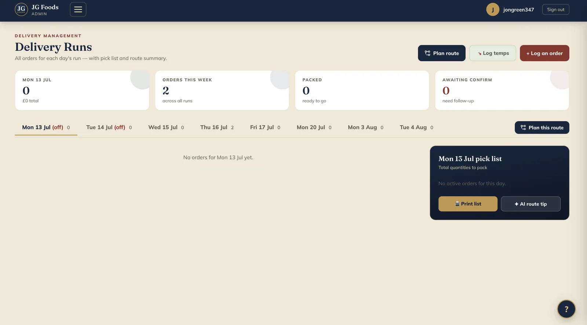
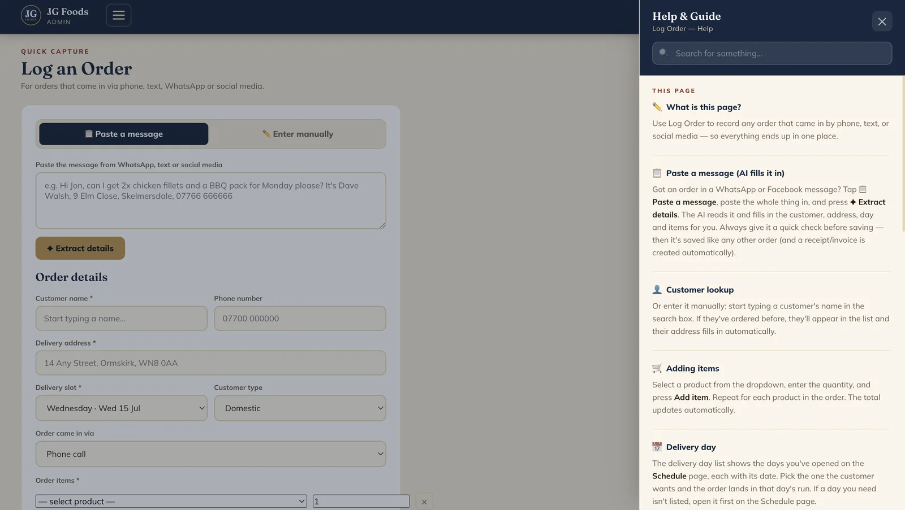
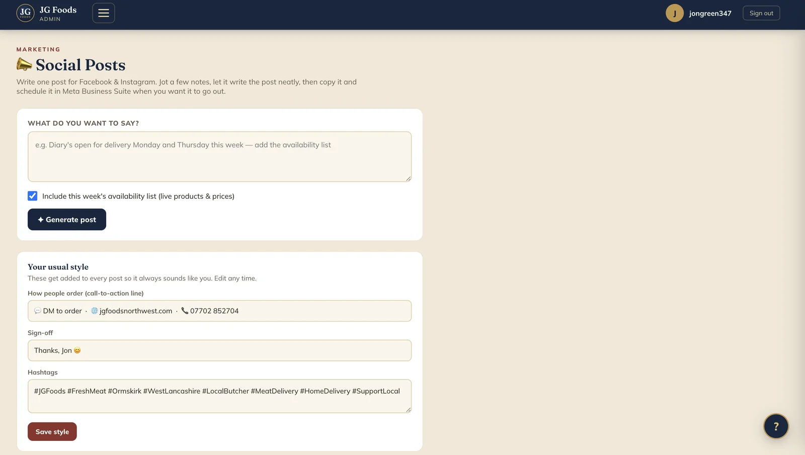
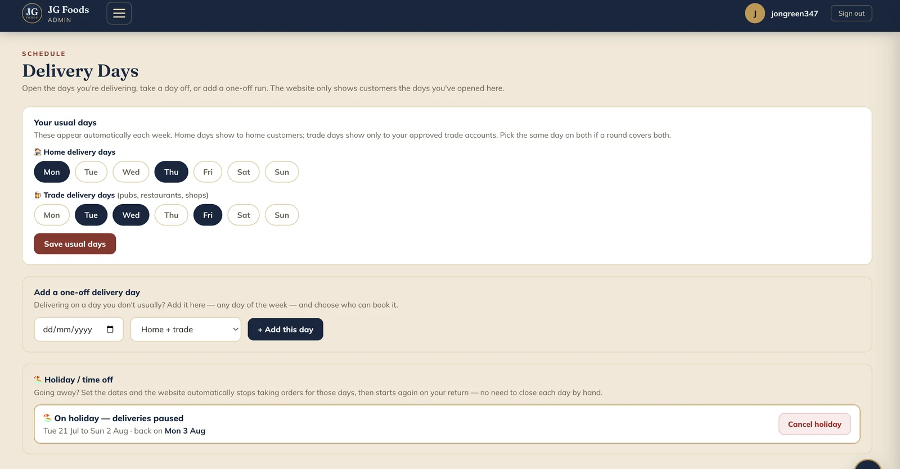

What we built
Two systems, working as one.
1 · The customer ordering site
- A mobile-first ordering website tied to that week's live availability — sold-out items simply don't show
- Customer accounts and order history, so regulars are recognised and reordering takes seconds
- Orders land in the system already structured — no retyping, no transcription errors
- Built around JG Foods' actual products, cuts and weekly rhythm — not a generic shop template
2 · The back-office business app
- Orders, customers and the weekly delivery run managed in one place
- Picking lists and run sheets generated automatically from confirmed orders
- An enquiry inbox and customer records, so nothing lives in message threads
- Secure sign-in, with the owner in full control of products, prices and availability





